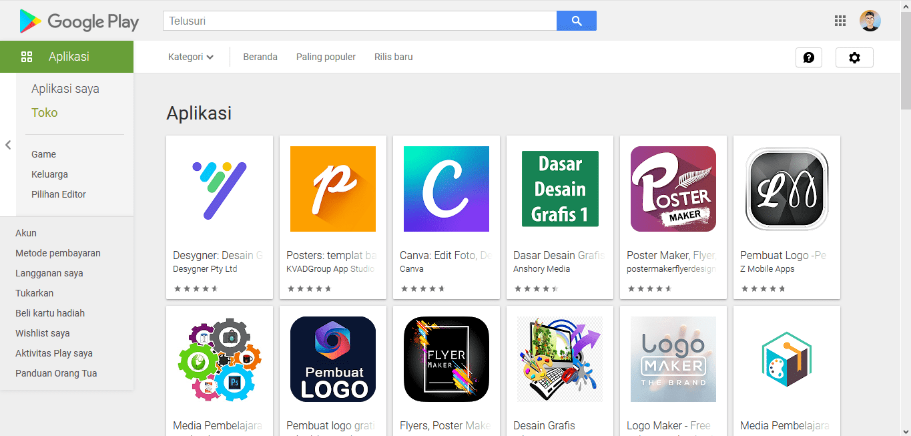

Cobalah 6 Desain Grafis Web Online
11 Januari 2021 Oleh Pembuat Seni
Seiring berkembangnya zaman, segala perkembangan teknologi akan memudahkan setiap elemen masyarakat dalam memenuhi berbagai keperluan. Salah satunya untuk belajar mendesain. Kini sudah banyak desain grafis web online yang bisa dicoba guna mempelajarinya secara otodidak.
Daftar Desain Grafis Web Online
Sebagai desainer grafis tentu akan dituntut untuk selalu berfikir secara kreatif dan inovatif. Tentu hal ini belum dikuasai penuh oleh mereka yang masih pemula. Anda pun tidak perlu khawatir sebab kini sudah banyak website untuk belajar desain grafis dengan gratis. Berikut beberapa rekomendasinya:
1. Udemy
Udemy ini dapat dibilang sebagai website paling populer di dunia untuk belajar desain grafis. Anda bisa menggunakannya untuk mulai mempelajari bidang ini secara online. Menariknya setiap pengguna dapat memilih kursus yang tersedia mulai dari pembelajaran terkait pemrograman sampai mendesain.
Di sana akan djumpai banyak kursus untuk belajar Adobe Illustrator, Ilustrasi, Adobe Premiere, Pro Create hingga mempelajari bahasa di bidang ini. Pengguna dapat menggunakannya baik secara berbayar maupun gratis sehingga bisa memilihnya sesuai dengan kemampuan membayarnya.
2. Yes I'm Designer
Situs ini sangat direkomendasikan bagi Anda yang ingin mempelajari software berupa Adobe Illustrator. Website Yes I'm Designer juga memiliki beragam kursus lainnya yang tidak kalah menarik seperti After Effect, Photoshop dan masih banyak lagi meskipun tidak sebanyak dari Udemy.
Kursus utama yang disediakan oleh Yes I'm Designer memang mengharuskan untuk membayarnya. Pengguna pun tidak perlu khawatir karena masih banyak tersedia video tutorial pendek yang dapat dipilih. Bahkan, dapat langsung mengunjungi dan masuk ke menu Free Tutorials.
3. Slideshare
Sebenarnya Slideshare ini dikembangkan oleh LinkedIn yang dikenal sebagai platform besar bagi pelaku bisnis. Anda bisa menjumpai berbagai materi kursus online berbentuk slide presentasi seperti PowerPoint, Google Slide maupun PDF. Situs ini dibilang cukup berbeda dengan dua web sebelumnya.
Slideshare ini sebenarnya bukanlah website khusus yang pure untuk belajar desain grafis melainkan juga memberikan berbagai materi lainnya dalam bentuk slide. Terdapat pula beberapa bidang pembelajaran lainnya secara gratis meskipun kualitasnya tidak sebagus seperti jenis berbayar.
4. Oksancia.com
Awalnya Oksancia.com merupakan website pribadi yang dimiliki oleh salah satu seniman digital cukup populer di kalangan desainer pattern di Amerika bernama Oksana. Situs ini akan menyediakan beragam materi khusus untuk digunakan sebagai bahan belajar cara membuat berbagai jenis corak.
Cara membuat pattern ini dapat dijumpai, mulai dari seamless pattern, pattern for textile dan cute pattern. Salah satu kursus paling populer di situs ini adalah Pattern It Up yakni mengajarkan cara pembuatan sekaligus dengan pemasarannya. Sayangnya program ini tersedia secara berbayar.
5. Patreon
Patreon bisa dikatakan hampir mirip seperti Slideshare sebab sangat berbeda jika dibandingkan dengan pembelajaran yang tersedia di Udemy atau Yes I'm Designer. Pengguna bisa membagikan berbagai macam materi atau tutorial dalam segala pembuatan desain melalui situs ini.
Namun, Anda perlu melakukan pembayaran terlebih dahulu untuk bisa bergabung menjadi anggotanya sebagai bentuk adanya dukungan terhadap tutorial yang telah dibagikan. Tentu saja materi di situs ini memang tersedia lebih banyak secara berbayar sebab dapat dikatakan untuk menggaji art creator.
6. Hay Academy
Hay Academy ini merupakan produk lokal dari salah satu freelancer terkenal di Indonesia. Website kursus online ini dapat digunakan untuk memperoleh berbagai jenis materi terkait dengan desain grafis yang dikemas secara menarik seperti kelas logo dan Photoshop atau Adobe Illustrator.
Kursus paling populer dari situs Hay Academy adalah Kelas Fiverr. Anda pun bisa membeli berbagai produk digital yang disediakan dan tentunya sangat bermanfaat untuk memaksimalkan pengerjaan desain grafis. Pembayarannya pun juga cukup mudah sebab dapat menggunakan bank lokal.
Keenam desain grafis web online di atas dapat Anda jadikan untuk memulai belajar secara otodidak. Kursus yang disediakan pada situs ini memang tidak semuanya gratis. Dengan kata lain, bisa jadi mengharuskan pengguna melakukan pembayaran terlebih dahulu agar bisa mengakses secara bebas.